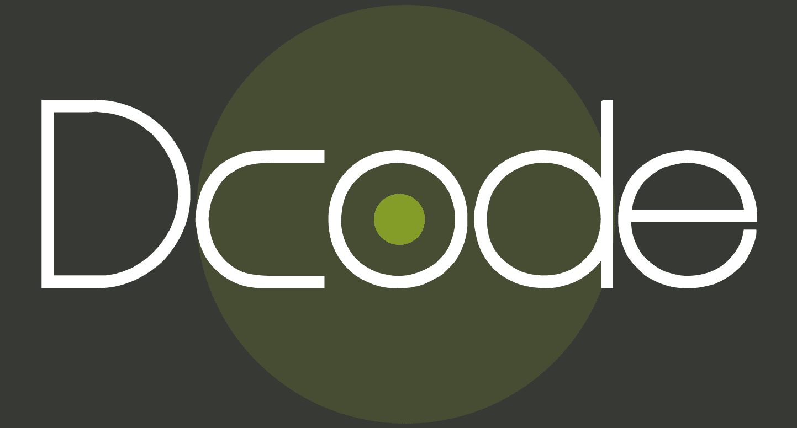
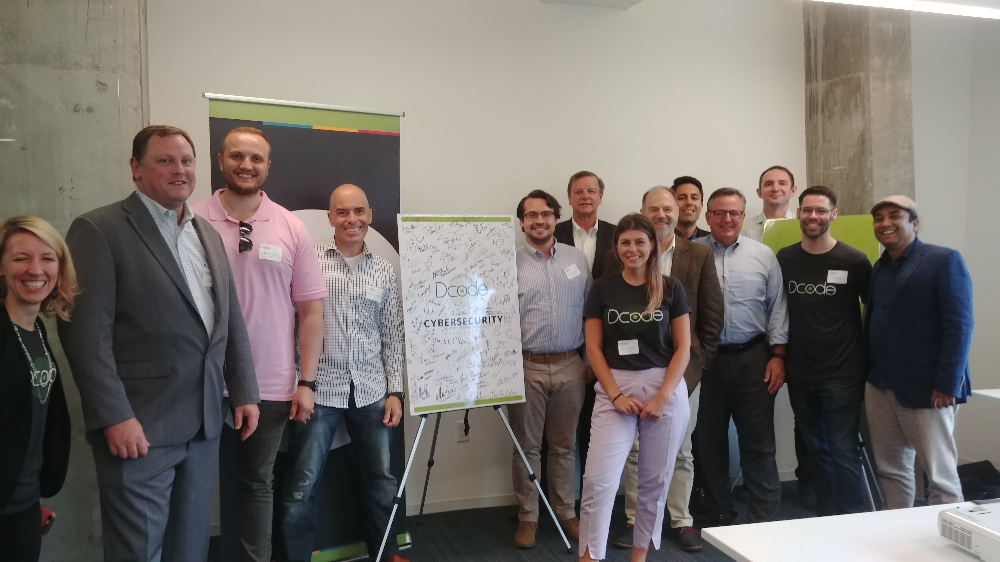

August 22, 2019
After over three months of intense development and training, we are pleased to announce that GovReady PBC is officially a graduate of the Dcode Accelerator Program! The accelerator was a crash course in how to develop our brand, how to be better partners with the federal government, and how to best share our vision of rethinking compliance. But more than anything else, the supreme pleasure of Dcode were the people. Never before have we had the pleasure of meeting so many energetic, passionate experts who wanted nothing more than to understand our process, help grow our company, and celebrate in our successes with us. To the devoted Dcode staff, visiting mentors, and friends within the Cybersecurity cohort, you all rock.
For more information on Dcode, visit their website here!
A few of our friends within the Cybersecurity cohort.
